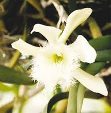
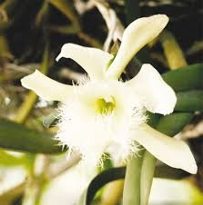
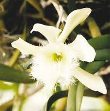

Simbolos Patrios Nacionales
Llegada de los pliegues

 



Llegada de los pliegues

Los Pliegos de la Independencia son los documentos contentivos del Acta de Independencia y
manifiestos enviados del Palacio Nacional de Guatemala a todos los ayuntamientos de las provincias
de Honduras.
Luego de la firma del Acta de Independencia en la actual ciudad de Guatemala la noticia de nuestra
independencia se conoció hasta el día 28 de septiembre, 14 días después con la llegada de los
Pliegos de Independencia a las ciudades de Comayagua y Tegucigalpa. Aunque la ciudad de Gracias fue
la primera en recibir los pliegos el 22 de septiembre.
Temprano por la mañana del 28 de Septiembre de 1821, correos urgentes arribaron a matacaballo a las
villas de Comayagua y Tegucigalpa.Se les esperaba:Noticias llegadas de Chiapas habían preparado el
ambiente. Los pliegos sellados que traían estos mensajeros fueron abiertos en los respectivos
ayuntamientos.
Daban cuenta de las decisiones tomadas hacia catorce días, el quince de Septiembre, en solemne
sesión ocurrida en el Palacio de los Capitanes Generales de Guatemala, e informaban que Guatemala se
había pronunciado a favor de la independencia. La caracterización de que, por liberal, Tegucigalpa
celebró los pliegos con júbilo, en tanto que Comayagua, por conservadora, los recibió con
reticencia, es simplista.
Sucedió que el Ayuntamiento de Tegucigalpa estaba controlado por Dionisio de Herrera y los
partidarios de la independencia. En Marzo de ese año el Alcalde Narciso Mallol había muerto y aún no
se le había designado sustituto. Mallol, que conocía la forma de pensar de Herrera, para vigilarlo
mejor lo había incorporado a la administración municipal. Cuando llegó Septiembre Herrera tenía las
manos libres para echar a volar, en son de alegría, las campanas de la libertad.
En el terreno siempre resbaladizo de las conjeturas, ¿hubo además de los pliegos algún otro tipo de
comunicación entre Guatemala y Tegucigalpa? Tegucigalpa se pronunció a favor de seguir en todo y con
todo lo acordado en Guatemala, que se contenía en los pliegos. El Acta del 15 de Septiembre había
sido no sólo redactada sino en gran medida inspirada por José Cecilio del Valle.
Los Herrera: Dionisio, Justo y Próspero, primos de Valle, mantuvieron siempre con él seguida
correspondencia. Los dos directores de periódico habían jugado su carta triunfadora el día quince.
Para Pedro Molina lo más importante era arrancarle a las autoridades españolas y a los prominentes
criollos una declaratoria de emancipación. Forzarle la mano a los indecisos. Desde que se supo que
Chiapas se había adherido a la independencia mejicana la agitación fue creciendo en Guatemala.
Barrundia, Molina, su mujer Dolores Bedoya, prepararon a la población para la sesión programada para
el 15.
El pueblo organizado por estos políticos llenó las calles, la plaza, los pasillos y la antesala del
lugar de sesiones. El numeral uno del Acta recoge la incomodidad y el no disimulado temor de las
fuerzas vivas convocadas a la sesión, las muy ilustres autoridades coloniales, dignatarios de la
Iglesia, miembros del Claustro Universitario, del Colegio de Abogados, del Consulado de Comercio,
del Ayuntamiento, de las Ordenes Religiosas cuando determinaron proclamar la independencia y evitar
con ello que el pueblo mismo lo declarara.
Presintieron la revolución, que el pueblo los destituyera y se pronunciara independiente.Decidieron
adelantarse a lo que calificaron de temible consecuencia. La proclamación fue seguida por estallido
de cohetes y muestras de regocijo popular. Molina había logrado su propósito. Le tocaba el turno a
Valle. La discusión prosiguió y fue orientada por Valle. Luego le encomendaron redactar el Acta de
los acuerdos establecidos. Valle, el de Choluteca, pensó en términos provincianos pero también
globales.
Lo decidido era la voluntad del pueblo de Guatemala. Pero ¿y el resto de las ciudades y sus
habitantes, qué pensaban? De la mano de Valle, en el Acta se diseñó un proceso de consulta electoral
que permitiría a todas las demás provincias elegir a sus representantes, para que estos se reunieran
en un magno congreso centroamericano, en Guatemala, el siguiente 1 de Marzo de 1822. Dos cometidos
habría de tener, según el Acta, este Congreso de Marzo: ratificar o no la declaratoria de
independencia, y en caso positivo, determinar la forma de gobierno y la ley fundamental por regir en
el nuevo país. Con sus vidas, de ser preciso, juraron los habitantes de Tegucigalpa, animados por
Dionisio de Herrera desde el balcón del Ayuntamiento, defender lo decidido en Guatemala. En
Comayagua fue distinto. Condujo la sesión el propio Gobernador Intendente, el peninsular José
Tinoco. La discusión se prolongó muchas horas.
Finalmente Comayagua se pronunció también a favor de la independencia pero rechazó la vía de acción
contenida en el Acta y propuesta desde Guatemala. Dados los acontecimientos posteriores y la actitud
del Capitán General de Guatemala, Gabino Gaínza, y otros criollos de la capital, siempre en el
terreno de las conjeturas, ¿hubo algún otro tipo de comunicación anexa a los pliegos del Acta, entre
las autoridades de la Capitanía General y las de Comayagua? En su decisión Comayagua se ahorraba la
celebración de elecciones y la instalación de un congreso que se reuniría el siguiente año para
decidir la forma de gobierno. Comayagua miraba en dirección de Chiapas, hacia la fórmula de las
«Tres Garantías» que había posibilitado la independencia mejicana.Es decir, independencia sí, con la
condición de que se constituyera un régimen monárquico con sede en Méjico y de que quedaran
intocables y sagrados todos los privilegios y prerrogativas de que gozaba la Santa Iglesia Católica.
Este símbolo proviene del escudo de armas que fue establecido en 1825, y que consistía en un triángulo en cuya base aparecía un volcán entre dos castillos, en el año 1866 se le agrego un sol naciente, en 1935 bajo la presidencia de Tiburcio Carias Andino, le fue dado su aspecto definitivo, agregándole las flechas y otras partes, El soberano Congreso Nacional en el decreto No. 216 y en el artículo 142 considera al Escudo como Símbolo Nacional para todos los usos, de modo claro y general.
Este el símbolo más representativo de Honduras, quedo establecido por decreto del Congreso Nacional el 6 de febrero de 1866, Ya en el siglo xx, en 1949, fueron precisados el tono azul y las proporciones de las tres franjas, el ancho de la bandera es dos veces mayor que su altura, honduras tardo 45 años en establecer una bandera, ya que después de la separación de honduras de los Estados Federados del Centro de América usaba la misma bandera que representaba a todos los países centro americanos..
Surgió a raíz de un concurso convocado en 1904 por el presidente de la república, general Manuel Bonilla, Escrito por el poeta Augusto C. Coello y orquestado por el compositor de origen alemán Carlos Hartling, fue declarado Himno nacional el 15 de noviembre de 1915, musicalmente el himno nacional consta de un coro y siete estrofas, cada estrofa la conforman ocho versos decasílabos y son en total 64 versos..
Primero fue la rosa la flor nacional de honduras, entre los años 1946 y 1969, pero en noviembre de ese último año el gobierno militar precedido por el General Oswaldo López Arellano decreto una nueva flor nacional la orquídea Brasasavola Dgbyana, esta orquídea abunda en los bosques hondureños, principalmente en las zonas húmedas que se encuentra a temperaturas muy frías.
La guara roja o guacamaya perteneciente a la gran familia de los loros, se le reconoce como el ave nacional de la república de honduras, es un ave muy apreciada por las antiguas civilizaciones, podemos encontrar esculturas talladas en los monumentos mayas, llega a medias hasta los 90 centímetros de largo..
Como medida para conservar la fauna nacional y sobre todo el medio ambiente, de la depredación desmedida, el congreso Nacional emitió el decreto ejecutivo n° 36-93 de junio de 1933, en virtud del cual se instituía como símbolo de la fauna nacional al Venado Cola Blanca, se trata de una de las dos especies de venado que habitan en Honduras, es un animal muy activo en los bosques hondureños..
Por acuerdo n° 429, de 14 de mayo de 1928, el gobierno de Miguel Paz Barahona resolvió declarar el pino hondurense como árbol nacional, este acuerdo expresaba: implantar, por medio de las autoridades de toda índole y de los centros de enseñanza, el hábito de poblar los bosques, es el árbol con mayor influencia en el país, su tala es controlada por el estado y en la mayoría de casas es ilegal hacerlo.
El Mapa Nacional de Honduras es la representación geográfica del país y en el figuran los 18 departamentos que componen la división administrativa, los mares que bañan sus costas las zonas fronterizas y los elementos físicos que integran el relieve hondureño: sierras montañas, valles, ríos, mesetas, colinas etc. De igual manera los nombres de las ciudades municipios aldeas y caseríos repartidos a largo y ancho del territorio; así mismo están incluido las zonas insulares.

Hola yo soy Omar, un gusto que hayas visitado mi pagina web de P Corporation, como siempre quiero agradecerte de que siempre me estes apoyando en los proyectos que realizo y espero que lo estes pasando bien, tambien te recomiendo visitar las paginas de Acorpi, para ello ve a la pestaña de acerca de en la pestaña de arriba... Gracias por ver.